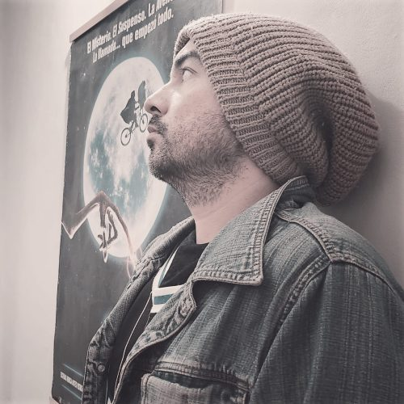

Bienvenido al curso de redes
Este curso está diseñado para proporcionarte los conocimientos y habilidades necesarias para entender,diseñar y gestionar redes de computadoras. Ya seas un principiante o un profesional quebusca actualizar sus conocimientos, este curso es para ti.
Sobre el curso
Nuestro curso de redes ofrece una formación completa en el ámbito de las redes de computadoras, desde los conceptos básicos hasta las tecnologías más avanzadas.
Obejtivos del curso
- Comprender los fundamentos de las redes de computadoras.
- Aprender a configurar y gestionar redes LAN y WAN.
- Conocer los protocolos de comunicación más utilizados.
- Implementar medidas de seguridad en redes
Metodologia
El curso combina teoría y práctica, con sesiones interactivas, laboratorios virtuales y proyectos reales
Instructores
Nuestros instructores son profesionales con amplia experiencia en el campo de las redes y certificaciones reconocidas internacionalmente.
Carlos Rodriguez
Carlos Rodríguez es un experto en seguridad de redes con más de 10 años de experiencia en la protección de infraestructuras críticas. Certificado en CISSP y CEH, Carlos ha trabajado en la implementación de firewalls, sistemas de detección de intrusos y políticas de seguridad para organizaciones gubernamentales y privadas. Su enfoque práctico y su habilidad para explicar conceptos complejos de manera sencilla lo convierten en un instructor altamente valorado/p>
Ana Martinez
Ana Martínez es una ingeniera informática especializada en redes de datos y virtualización. Con una amplia experiencia en la configuración y administración de redes LAN y WAN, Ana ha trabajado enlamigración de infraestructuras tradicionales a entornos cloud. Certificada en VMware y Microsoft Azure, Ana está comprometida con la formación de profesionales capaces de enfrentar los desafíos de las redes modernas.
Gloria Zepeda
Gloria Zepeda es una ingeniera informática especializada en redes definidas por software (SDN) y virtualización de funciones de red (NFV). Con una maestría en Ingeniería de Redes y certificaciones enOpenFlow y Cisco ACI, Sofía ha liderado proyectos de transformación digital en grandes corporaciones. Su pasión por la innovación y su habilidad para enseñar conceptos avanzados la hacen una instructoraexcepcional.

Luis Fernández
Luis Fernández es un ingeniero informático con una destacada carrera en el ámbito de las redes de alta disponibilidad y balanceo de carga. Con certificaciones en F5 Networks y Juniper, Luis ha participado en el diseño de redes escalables y resilientes para empresas de tecnología y servicios financieros. Su enfoque en la resolución de problemas y su experiencia en entornos de alta demandalo convierten en un recurso invaluable para cualquier equipo de redes.
Maria Gonzales
María González es una ingeniera informática con una amplia trayectoria en el campo de las redes inalámbricas y las telecomunicaciones. Con una maestría en Redes y Sistemas de Comunicación, Maríaha liderado proyectos de investigación en tecnologías emergentes como 5G y IoT. Certificada en redes inalámbricas por CWNP, María combina su experiencia práctica con una sólida base teórica para ofrecer una formación integral a sus estudiantes

Juan Perez
Juan Pérez es un ingeniero informático con más de 15 años de experiencia en el diseño, implementación y gestión de redes de computadoras. Especializado en redes empresariales y seguridad informática, Juan ha trabajado en proyectos de gran envergadura para empresas multinacionales. Posee certificaciones en Cisco (CCNA, CCNP) y es un apasionado por la enseñanza, habiendo impartido cursos y talleres en diversas instituciones educativas.